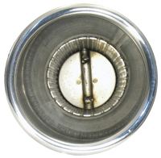

More Power.
More Power
Patriot Defenders feature a Step Pipe design that promotes exhaust velocity while reducing reversion that can dilute the intake charge. By utilizing these technologies in conjunction with a formed merge collector and a state of the art perforated muffler core, Patriot’s engineers have developed an exhaust system that performs on a par with other top brands for horsepower and torque while offering easy volume changes of the SFI Valve and Superior Stainless Steel Construction. See the Patriot Defender vs Thunderheader dyno charts here.Loud When You Want... Quiet When You Need
With Patriot’s patented Defender Exhaust, featuring SFI* Technology, just an easy adjustment takes your bike from Deep Rumple to Subtle Quietness. Maybe you live in an area where Law Enforcement is cracking down on Loud pipes. With the Defender you can ride at the sound you need. No discs to remove, No unbolting, No Dirty mufflers to reach inside and turn – Just a simple adjustment.
Simple Volume Changes!
In the Closed Position, Defenders will generally replicate stock sound levels. As you open the SFI valve, sound levels and power output, will increase, with a Deep, Throaty Rumble that rivals any pipe on the market for great sound and significant power increases. To adjust the Defender’s SFI valve; loosen the set screw on the SFI valve arm, rotate the valve to the desired sound level position, tighten the set screw – 30 seconds and you’re done.
SFI stands for Sound Flow Inversion, Patriot’s innovative exhaust baffle design that allows the rider to redirect the flow of the exhaust to instantly change the volume. In 1996 the first generation of SFI Slip On mufflers were produced for Harley’s and quickly became a big seller. In 2005 Engineering work began on incorporating the SFI Technology in to a performance exhaust system. That engineering effort culminated in the line of pipes now known as the Patriot Defenders.
Patented Styling
The beautiful flowing style of the Stainless Steel Patriot Defender is so unique; it was awarded a Patent for its styling. Different from anything else on the market, this 2 into 1 performance pipe will also add to the good looks of your Harley Davidson motorcycle. From the Beefy Chromed heat shields to the merge collector and 4” muffler section with rolled end tip the Defender makes a statement about you and your motorcycle. The pipes are available in Highly Polished Stainless Steel with Chromed Heat Shields, Black Metallic Ceramic Heat coating with Chromed Heat Shields, or Black coated with Black Heat Shields to suit any style of bike.